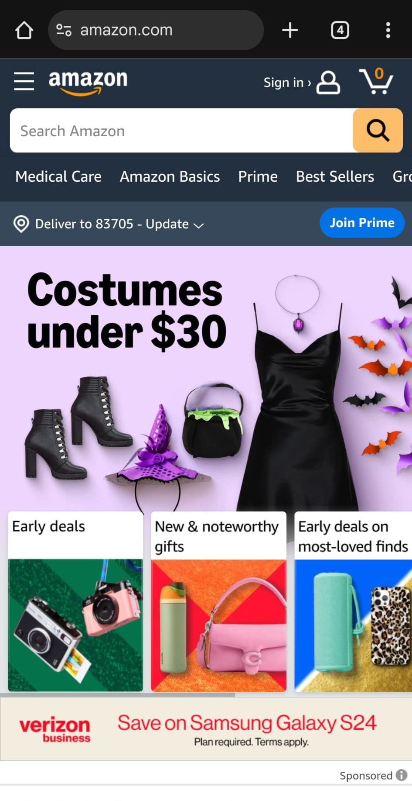
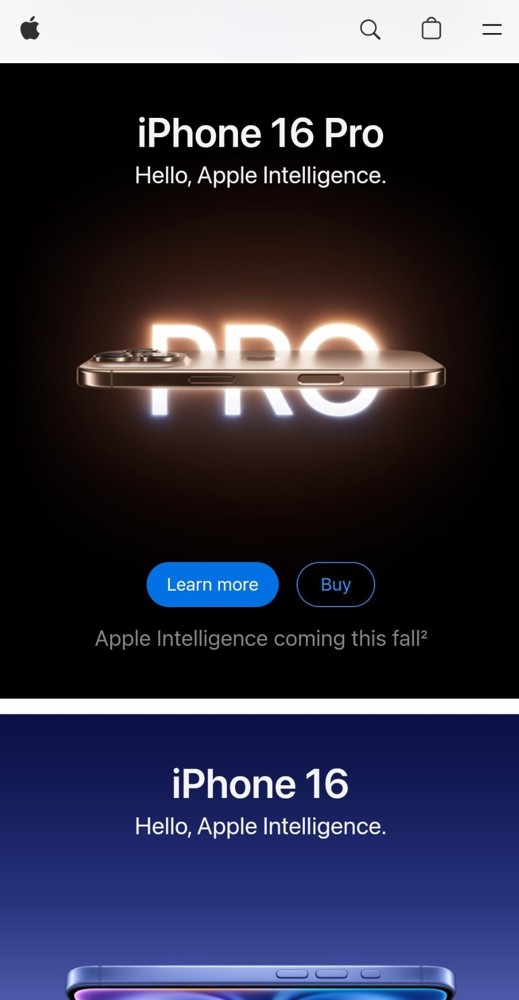
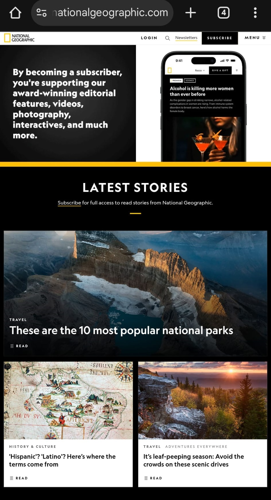

Fitt's Law
 This principle predicts the time it takes to move to a
target area, such as a button or link, based on its size and distance from the starting point. Size of
buttons and how easy it is to interact are important characteristics of fitt's law. A well-known example
that follows this principles is Amazon.
The "Add to Cart" and "Buy Now" buttons are prominent and easy
to click. On mobile, buttons remain large and easy to tap, enhancing usability. These design choices
help streamline the shopping experience for users.
PARC: Repetition
 Repetition is one of the PARC principles (Proximity, Alignment, Repetition ans Contrast) It emphasizes
consistency throughout a website. Repeating design elements (like colors, fonts, and button styles)
creates a cohesive look and feel across all pages.
This helps users understand how to interact with the
site Repeating visual cues (like navigation menus) helps guide users through the site, making it easier
for them to find information and complete tasks. A good example of
this principles is Apple. The navigation bar and product sections maintain similar layouts, guiding
users intuitively through the site.
Rule of Thirds
National geographic (nationalgeographic.com)
 The rule of thirds involves dividing a layout into a grid of nine equal sections by two horizontal and
two vertical lines, creating a 3x3 grid. Placing key elements (like images, text, or buttons) along the
lines or at their intersections helps create a more visually balanced and engaging layout. Important
content can be positioned at these intersections to draw the viewer's attention naturally, guiding their
eye to where you want them to focus.
National Geographic website exemplifies this principle:The homepage
features images and text arranged in a way that aligns with the rule, drawing the viewer's eye to key
content areas. The layout uses asymmetry to create an engaging experience that encourages exploration.